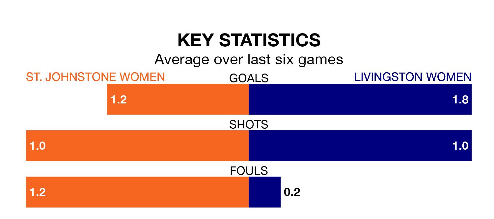

Mid-season relegation candidates St. Johnstone Women face a challenge against high-flying Livingston Women at the Riverside Stadium on Sunday.
St. Johnstone Women are sixth in the SWPL 2 table, and have picked up four wins and no draws in their 14 games to date.
Livingston, meanwhile, are second in the standings with 29 points, having won nine and drawn two of their first 15 matches, and are eight points behind table-toppers Queen's Park W.
St. Johnstone are in bad form in SWPL 2, with one win and five losses from their last six games.
With four wins and a draw over that period, Livingston's form is much better – they have taken 13 points from 18, compared to the hosts' three.
With 31 goals in 15 games so far this season, the away side are scoring more than average in the league with 2.1 goals per game. And they are conceding fewer than average, letting in 20 goals at a rate of 1.3 per game.
St. Johnstone, meanwhile, are average scorers, with 1.9 goals per game. They have conceded 2.4 goals per game.
In the last three years, St. Johnstone and Livingston have played each other on three occasions. St. Johnstone won one of them and Livingston the other.
Their last meeting was on November 19, when Livingston won 4-2 at home.
St. Johnstone's last match was on January 14, a 3-1 loss against Kilmarnock Women, with getting the goal for St. Johnstone.
Livingston beat Kilmarnock Women 1-0 last time out, on Sunday, with on the scoresheet.
Updated: 09:18 (UTC), 23/01/24